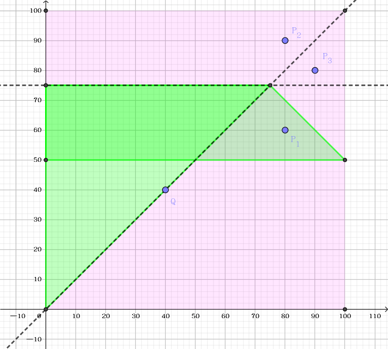

桌上有一张边界平行于坐标轴的正方形纸片，左下角的坐标为 $(0, 0)$，右上角的坐标为 $(100, 100)$。
接下来执行 $n$ 条折纸命令。每条命令用两个不同点 $P_1(x_1, y_1)$ 和 $P_2(x_2, y_2)$ 来表示，执行时把当前的折纸作品沿着 $P_1P_2$ 所在直线折叠，并把有向线段 $P_1P_2$ 的右边折向左边 (左边的部分保持不变)。
折叠结束后，需要在作品上打一个孔，然后用绳子穿起来挂在墙上。孔的位置是相当重要的：若需要穿过太多层的纸，打孔本身比较困难；若穿过的层数太少，悬挂起来以后作品可能会被撕破。
为了选择一个比较合适的打孔位置，你需要计算在每个候选位置打孔时穿过的层数。如果恰好穿过某一层的边界 (误差 $10^{-6}$ 内)，则该层不统计在结果中。本题考虑一个简化的模型：纸的厚度不计，因此折纸操作总能完美执行。
第一行包含一个非负整数 $n$ ($n \leq 8$)，即折纸的次数。
接下来的 $n$ 行，每行包含四个实数 $x_1, y_1, x_2, y_2$，表示每次折纸时对应的有向线段。
下一行包含一个正整数 $m$ ($m \leq 50$)，即候选位置的个数。
接下来的 $m$ 行，每行包含两个实数 $x, y$，表示一个候选位置。
每个候选位置输出一行，包含一个整数，即该位置打孔时穿过的层数。
先讲几句废话吧：计算几何中，在表示直线 (不是线段时)，强烈推荐用一般式 $Ax + By + C = 0$ 而不是两点式 $(x_1, y_1), (x_2, y_2)$ 存储！
其实这是有道理的。第一，一般式只需用到 $3$ 个变量 ($A, B, C$)，而两点式会用到 $4$ 个变量 ($x_1, y_1, x_2, y_2$)。同样表示一条直线，用的变量多了，它们内部的约束自然就强了。况且，这 $3$ 个变量 ($A, B, C$) 之间的约束非常简单，它们只是成一个比例而已。
其次，直线方程 $Ax + By + C = 0$ 有一个好处，它可以将任何一个点代入这条直线 (当然直线上的点代入得到的值一定为 $0$)。由于一条直线将平面分成两个半平面，那么，一定有其中一个半平面中的点代入所得的值都 $> 0$，另一个半平面中的点代入所得的值都 $< 0$，这样，就非常方便地判断点在直线的哪一侧 (比如这道题就需要)。
最后，这种方程还可以非常简单地计算一般地计算几何所需的事情。过两点的直线，只需外积即可，两直线交点，还是两个外积。点到直线的距离，点关于直线的对称点，都可以轻松求出，具体见模板 "直线及其函数"。
接下来回到正题。对于每次折纸给定两个点，可以求出过它们的直线。由于两个点是有向的，故我们可以令直线右边 (即要折过去的一侧) 代入的值 $< 0$，直线左边 (即要折过来的一侧) 代入的值 $> 0$ 即可。转化成一条直线 ($A, B, C$)。
对于每次询问 (一个候选位置)，我们考虑它的所有的初始情况。倒着考虑，首先考虑最后一次的情况。如果它在那条直线的左边，那么它折之前可能在左边，也可能在右边 (该点关于该直线的对称点)，否则，它折之前只可能在右边。
由于折纸次数不是很多，于是可以使用 dfs() 用 $O(2^n)$ 时间获得它所有可能的原始位置。
过滤掉纸片之外的点，然后去重。那么接下来的点数就是答案吗？不一定，如下图：
将 $P_1$ 进行逆推，可以得到三个点 $P_1, P_2, P_3$，而其中只有 $P_2, P_3$ 是符合要求的，因此对每个点，还要进行最终检验再筛去一些没有用的解。
最后，由题目中的一句话穿过某一层的边界，就不统计在结果中。可以发现，当在最终检验时一个点跑到了折痕上，则这个点一定不满足要求 (如上图的 $Q$ 点)，返回 false (其实从样例中也可以看出来)。
时间复杂度 $O(2^n n m)$。
#include <bits/stdc++.h>
#define N 10
#define N2 10034
using namespace std;
const double eps = 1e-8, EPS = 1e-13;
struct vec2{
double x, y;
vec2 (double x0 = 0.0, double y0 = 0.0): x(x0), y(y0) {}
vec2 * read() {scanf("%lf%lf", &x, &y); return this;}
inline vec2 operator + (const vec2 &B) const {return vec2(x + B.x, y + B.y);}
inline vec2 operator - (const vec2 &B) const {return vec2(x - B.x, y - B.y);}
inline vec2 operator * (double k) const {return vec2(x * k, y * k);}
inline double operator * (const vec2 &B) const {return x * B.x + y * B.y;}
inline double operator ^ (const vec2 &B) const {return x * B.y - y * B.x;}
inline double norm2() const {return *this * *this;}
inline bool operator < (const vec2 &B) const {return x < B.x - eps || x < B.x + eps && y < B.y - eps;}
};
struct line{
double A, B, C; // Ax + By + C = 0
line (double A0 = 0.0, double B0 = 0.0, double C0 = 0.0): A(A0), B(B0), C(C0) {}
inline vec2 normVec() const {return vec2(A, B);}
};
// substitute a point for a line.
inline double substitute(const vec2 P, const line l) {return l.A * P.x + l.B * P.y + l.C;}
// return a line through 2 points.
// the side which the function value < 0 will fold to the other side.
inline line getLine(const vec2 u, const vec2 v) {return line(u.y - v.y, v.x - u.x, u ^ v);}
// return the symmetry point of a point about given line.
inline vec2 getSymmetry(const vec2 P, const line l){
double K = substitute(P, l) * 2.0 / l.normVec().norm2();
return P - l.normVec() * K;
}
int n, q, i;
int cnt, ans;
line l[N];
vec2 u, v;
vec2 P[N2];
void dfs(vec2 t, int d){
if(P[cnt++] = t, d){
dfs(t, d - 1);
if(substitute(t, l[d]) > eps) dfs(getSymmetry(t, l[d]), d - 1);
}
}
bool check(vec2 P, vec2 Q){
double W;
for(int i = 1; i <= n; ++i)
if((W = substitute(P, l[i])) < -eps) P = getSymmetry(P, l[i]);
else if(W < eps) return false;
return (P - Q).norm2() < EPS;
}
int main(){
scanf("%d", &n);
for(i = 1; i <= n; ++i) {u.read(); v.read(); l[i] = getLine(u, v);}
for(scanf("%d", &q); q; --q){
cnt = ans = 0;
dfs(*u.read(), n);
sort(P, P + cnt);
for(i = 0; i < cnt; ++i)
if(!i || (P[i] - P[i - 1]).norm2() > EPS)
ans += eps < P[i].x && P[i].x < 100.0 - eps && eps < P[i].y && P[i].y < 100.0 - eps && check(P[i], u);
printf("%d\n", ans);
}
return 0;
}
坑1：不要忘记最后要进行去重和最终检验，还有在折痕上的需要排除。